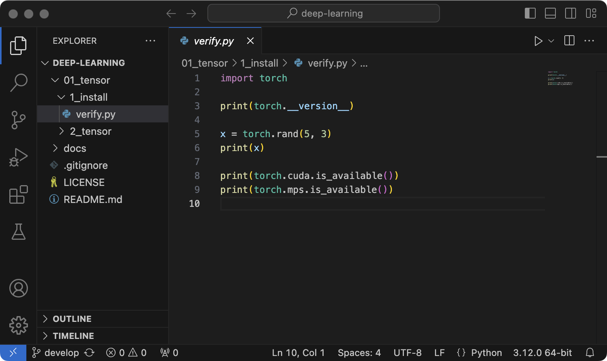
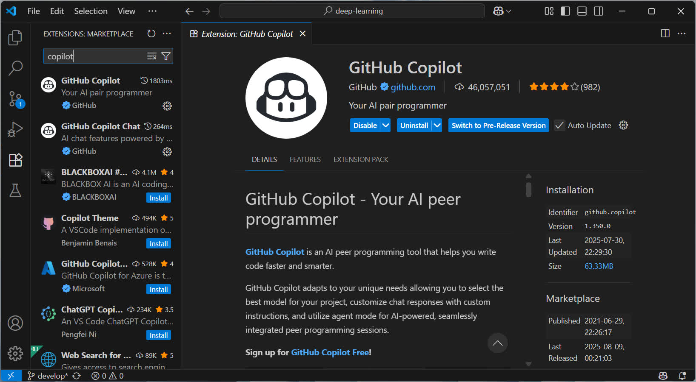
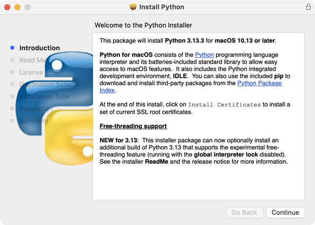
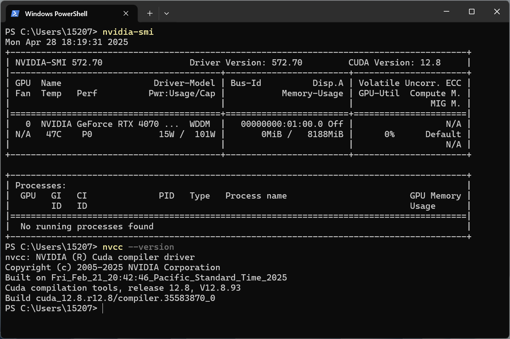

1.1 Install PyTorch
Install PyTorch related libraries and verify whether the installation is successful!
Created Date: 2025-04-26
The main task is to install and verify PyTorch related libraries. For beginners, you can skip the GPU installation and use the CPU version of PyTorch for learning (GPU will need to be installed later). The installation instructions of CPU are as follows:
pip3 install torch torchvision torchaudio
1.1.1 Install IDE
We should have an IDE (Integrated Development Environment) for writing, compiling, and debugging code. You can choose what you like. I recommend using VS Code here because that’s what I use.

Figure 1 - VS Code UI
I recommend installing the Github Copilot plugin, which is incredibly useful for AI code completion and can greatly improve your learning efficiency. Also, feel free to ask questions about OpenAI ChatGPT or Google Gemini . As a free user of either, I'd like to give them a shout-out.

Figure 2 - GitHub Copilot
1.1.2 Install Python
Go to the Python official website to download Python. It is recommended to use the latest version.

Setting up your environment can be tricky, but it's a crucial first step. For learners, a virtual environment might seem like an unnecessary complication. I'd suggest starting without one to keep things simple.
When we write the tutorials, we'll use the most recent stable version of Python. We'll also try to avoid any libraries that don't support it, so you can just use a single, up-to-date Python installation without any compatibility headaches.
1.1.3 Install CUDA
The NVIDIA® CUDA® Toolkit provides a development environment for creating high-performance, GPU-accelerated applications. With it, you can develop, optimize, and deploy your applications on GPU-accelerated embedded systems, desktop workstations, enterprise data centers, cloud-based platforms, and supercomputers. The toolkit includes GPU-accelerated libraries, debugging and optimization tools, a C/C++ compiler, and a runtime library.
After installed the CUDA package, we can confirm whether the installation was successful by typing nvidia-smi or nvcc --version :

1.1.4 Install PyTorch
Go to the PyTorch official website, select preferences and run the command to install PyTorch locally:
| PyTorch Build | Stable (2.7.0) | Preview (Nightly) | ||
|---|---|---|---|---|
| Your OS | Linux | Mac | Windows | |
| Package | Conda | Pip | LibTorch | Source |
| Language | Python | C++/Java | ||
| Compute Platform | CUDA 12.6 | CUDA 12.8 | ROCm 6.3 | Default |
pip3 install torch torchvision torchaudio
If CUDA installed, we can use the following command:
pip3 install torch torchvision torchaudio --index-url https://download.pytorch.org/whl/cu128
1.1.5 Verify
Download the tutorial repository, open the verify.py file, import the torch library, and print its version:
import torch
print(torch.__version__)2.6.0+cu124
🎉 Congratulations, you have completed the PyTorch installation task!
We can use torch to create a Tensor, which will introduction in next section:
x = torch.rand(size=(5, 3))tensor([[0.9032, 0.6900, 0.7404],
[0.2300, 0.5118, 0.5050],
[0.9662, 0.1400, 0.8662],
[0.8696, 0.9460, 0.6607],
[0.9800, 0.5627, 0.3977]])
torch.cuda.is_available() to verify whether PyTorch can use CUDA acceleration, and torch.mps.is_available() to detect macOS acceleration settings:
print(torch.cuda.is_available())
print(torch.mps.is_available())